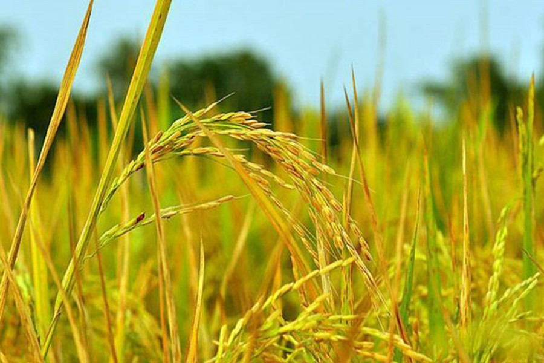

আউশ ধানের একটি মৌসুমের নাম, যা প্রধানত বাংলাদেশে
উৎপাদিত হয়। এছাড়াও এ ধান ভারতের পশ্চিমবঙ্গ, বিহার
ও অসম রাজ্যেও চাষাবাদ করা হয়ে থাকে। এ ধান বেশ
পরিবেশবান্ধব ও কৃষকবান্ধবও বটে। এই ধান সাধারণত
জন্মে বর্ষাকালের আষাঢ় মাসে। এই কারণে এর অপর নাম
আষাঢ়ী ধান। তবে এই ধান বৎসরের যে কোন সময়েই চাষ
করা যায়। প্রাচীন কাল থেকে বাংলাদেশে তিনটি ধানের
মৌসুম চলে আসছে – আউশ, আমন এবং বোরো।
বিংশ শতাব্দীতে ষাটের দশকে সেচ নির্ভর ইরি-বোরো ধান
প্রবর্তনের আগে পর্যন্ত আমন এবং আউশ ছিল ধানের
প্রধান ফসল। এ ধান সমতল, জলাভূমি ছাড়াও পাহাড়ী
অঞ্চলেও আবাদ হয়। জুম চাষের এক অন্যতম ফসল হলো
এই আউশ ধান।